Chapter 10 Annahmen der Multiplen Linearen Regression
Einleitung
Wenn wir uns den gerichteten Zusammenhang von mehr als zwei Variablen anschauen möchten, können wir dafür die multiple lineare Regression nutzen. Bei dieser können wir eine abhängige Variable (AV, nachfolgend Kriterium genannt) durch mehrere (multiple) unabhängige Variablen (UVs, nachfolgend Prädiktoren genannt) vorhersagen. Grundsätzlich gilt, dass das Kriterium metrisch sein muss (d.h. mindestens intervallskaliert). Die Prädiktoren hingegen können auch kategorial (d.h. dichotom, nominal- oder ordinalskaliert) sein, sofern diese korrekt kodiert werden (z.B. als Dummyvariablen).
Wie sieht die Regressionsgleichung aus?
Nach dem linearen Modell gilt (für Person \(i=1, ..., n\) und Prädiktor \(k=1, ..., K\)):
\[y_i = b_0 + b_1x_1 + ... + b_Kx_K + e_i\]
\(y\): Kriterium
\(b_0\): y-Achsenabschnitt (Intercept)
\(b_1, ..., b_K\): Steigungen (Slopes); hier unstandardisiert
\(e_i\): Residuum (Vorhersagefehler); gibt den Teil von y an, der nicht durch die Regressionsgleichung vorhergesagt werden kann
Bei der Anwendung der multiplen linearen Regression müssen allerdings bestimmte Annahmen erfüllt sein. Wenn diese verletzt sind, besteht die Gefahr, dass die Parameterschätzungen inkorrekt (verzerrt) sind und/oder wir inkorrekte Schlussfolgerungen über das Vorhandensein von Effekten in der Population ziehen (z.B. wir aufgrund von verzerrten Standardfehlern fälschlicherweise ein signifikantes Ergebnis erhalten).
Die wichtigsten Annahmen sind: Linearität, Exogenität, Homoskedastizität und die Unabhängigkeit der Residuen. Darüber hinaus sollten wir uns auch immer die Normalverteilung der Residuen, Multikollinearität sowie Ausreißer und einflussreiche Datenpunkte ansehen.
| verzerrte Koeffizienten | verzerrte Standardfehler | |
|---|---|---|
| Linearität | X | X |
| Exogenität | X | X |
| Homoskedastizität | X | |
| Unabhängigkeit der Residuen | X | |
| Normalverteilung der Residuen | X | |
| Multikollinearität | X | |
| Einflussreiche Datenpunkte | X |
Bei der Prüfung von Annahmen in der multiplen linearen Regression ist die Residualdiagnostik ein wichtiges Verfahren. Residuen \(\hat e_i\) sind Abweichungen der vorhergesagten Werte des Kriteriums \(\hat y_i\) von den beobachteten Werten des Kriteriums \(y_i\) von Person \(i\). Man schaut sich anstatt der geplotteten Rohdaten häufig die Residualplots an, weil man Plots mit mehr als zwei Achsen (bei mehr als einem Prädiktor) grafisch nicht gut darstellen kann. Zusätzlich visualisieren Residuen die Abweichungen besser und lassen uns so u.a. nicht-lineare Zusammenhänge besser aufdecken.
Die verschiedenen Annahmen werden im Verlauf der folgenden Abschnitte kurz erläutert und Möglichkeiten der Überprüfung (v.a. mit Hilfe von Grafiken), sowie zum Umgang mit Verletzung der Annahmen kurz skizziert.
Warum werden bevorzugt Grafiken genutzt, um die Annahmen zu prüfen?
In geplotteten Daten können verschiedenste Verletzungen (z.B. Missspezifikationen der Form des Zusammenhangs zwischen den Variablen) entdeckt werden, denn graphische Darstellungen machen nur geringe Annahmen über die Art des Problems. Statistische Tests hingegen haben häufig einen eingeschränkten Fokus und sie vergleichen nur, was wir vorgegeben haben. Zusätzlich funktionieren sie nur unter bestimmten Annahmen, liefern lediglich eine 0/1-Aussage ohne die Schwere des Annahmeverstoßes zu quantifizieren und hängen stark von der Stichprobengröße ab.
Was ist die Lowess Fit Line?
Wenn wir Ergebnisse einer linearen Regression mit plot() darstellen, wird häufig die sogenannte Lowess Fit Line eingezeichnet.
Lowess steht für locally weighted scatterplot smoother. Die Lowess (oder auch Loess) Fit Line ist ein Verfahren, welches den besten nonparametrischen Fit für die gegeben Daten anzeigt. Sie ist eine Auswertungshilfe bei der Beurteilung der Form des Zusammenhangs. Dabei macht sie keine Annahmen über die Form des Zusammenhangs zwischen den Variablen. Der Zusammenhang zwischen zwei Variablen wird im Streudiagramm als “smoothe” Linie, die den generellen Trend der Daten beschreibt, dargestellt. Wenn der Zusammenhang zwischen zwei Variablen in der Population linear ist, so sollte sich auch die Lowess Line einer Gerade annähern. Allerdings ist die Lowess Line häufig an den Enden der Verteilung von X weniger präzise, da hier weniger Daten vorhanden sind.
Beispieldatensatz für dieses Kapitel
Hier sehen wir, wie wir den Datensatz erstis, an dem wir in diesem Kapitel arbeiten werden, einlesen können.
load(url("http://www.beltz.de/fileadmin/beltz/downloads/
OnlinematerialienPVU/R_fuer_Einsteiger/erstis.rda"))
# Zeilenumbruch zwischen der ersten und zweiten Zeile noch entfernen!Die enthaltenen Daten sind aus einer Erhebung mit Erstsemesterstudierenden der Psychologie. Unter diesem Link finden wir das Codebuch zum Datensatz.
Exemplarisch schauen wir uns für dieses Kapitel an, wie gut sich lz.1 (Lebenszufriedenheit T1) durch zuf.inh.1 (Zufriedenheit mit Studieninhalten T1) und zuf.bed.1 (Zufriedenheit mit Studienbedingungen T1) vorhersagen lässt.
Dazu erstellen wir erst einen neuen Datensatz mit diesen Variablen und führen dann die Regression durch.
# Daten aus erstis in neuem Dataframe speichern ...
daten <- data.frame(erstis$lz.1, erstis$zuf.inh.1, erstis$zuf.bed.1)
# ... und Spalten umbenennen
names(daten) <- c("leb_zufr", "zufr_inhalt", "zufr_beding")
# Regression durchführen
lm_lz <- lm(daten$leb_zufr ~ daten$zufr_inhalt + daten$zufr_beding,
na.action = "na.exclude")
# mit "na.exclude" schließen wir fehlende Werte ausFür mehr Informationen dazu, wie lm() und andere Funktionen mit Missings umgehen, können wir uns das Kapitel Fehlende Werte anschauen.
# Die Residuen brauchen wir später, daher fügen wir sie jetzt ...
# ... schon als Variable zum Datensatz hinzu.
daten$resid <- residuals(lm_lz)
# wichtig: residuals() oder resid() nehmen
# lm_lz$residuals funktioniert hier nicht,
# ... weil die Zeilenanzahl geringerer ist ...
# ... weil Zeilen mit Missings gelöscht werdenIm Rahmen dieses Kapitels liegt der Fokus nicht auf der inhaltlichen Interpretation der Ergebnisse der multiplen linearen Regressions, sondern darauf, ob die oben genannten Annahmen erfüllt sind.
Nachfolgend sehen wir den Output der lm()-Funktion (lm_lz).
summary(lm_lz)##
## Call:
## lm(formula = daten$leb_zufr ~ daten$zufr_inhalt + daten$zufr_beding,
## na.action = "na.exclude")
##
## Residuals:
## Min 1Q Median 3Q Max
## -15.2274 -3.7319 0.8666 3.8354 8.5019
##
## Coefficients:
## Estimate Std. Error t value Pr(>|t|)
## (Intercept) 12.7910 2.3392 5.468 1.7e-07 ***
## daten$zufr_inhalt 2.4993 0.6870 3.638 0.000369 ***
## daten$zufr_beding 1.3128 0.5743 2.286 0.023572 *
## ---
## Signif. codes: 0 '***' 0.001 '**' 0.01 '*' 0.05 '.' 0.1 ' ' 1
##
## Residual standard error: 5.137 on 161 degrees of freedom
## (27 observations deleted due to missingness)
## Multiple R-squared: 0.141, Adjusted R-squared: 0.1303
## F-statistic: 13.21 on 2 and 161 DF, p-value: 4.87e-06Estimate-Spalte) und/oder Standardfehler (Std.Error-Spalte) inkorrekt sind. Damit wären unsere Ergebnisse u.U. untauglich.
Achtung: Um eine (multiple) lineare Regression durchführen zu können, müssen unsere Daten ggf. in einem für unsere Analyse geeigneten (Tabellen-)Format vorliegen. Es gibt das Long- und das Wide-Format. Wie wir beide ineinander überführen können erfahren wir im gleichnamigen Kapitel.
10.1 Linearität
Mit Linearität ist die korrekte Spezifikation der Form des Zusammenhangs zwischen Kriterium und Prädiktoren gemeint. Genauer gesagt, meint die Annahme, dass der Erwartungswert des Kriteriums sich als Linearkombination der Prädiktoren darstellen lässt.
Achtung: Dies bedeutet jedoch nicht notwendigerweise, dass der Zusammenhang der Variablen linear sein muss.
Es muss sich lediglich um eine linear additive Verknüpfung der Regressionsterme handeln. Beispielsweise spezifiziert die folgende Regressionsgleichung \(y=b_0 + b_1x^2 + e\) einen quadratischen Zusammenhang zwischen \(Y\) und \(X\) mittels einer linear additiven Verknüpfung der Regressionsterme (hier nur ein einziger Prädiktor \(X\)). Siehe auch den Abschnitt zum Umgang mit Nicht-Linearität.
Wenn die Form des Zusammenhangs zwischen Kriterium und Prädiktoren nicht richtig spezifiziert wurde, können ernsthafte Probleme auftreten. Dies wäre zum Beispiel dann der Fall, wenn es zwischen Prädiktoren und Kriterium in Wirklichkeit einen quadratischen Zusammenhang gibt, wir in unserem Regressionsmodell aber nur einen linearen Zusammenhang spezifiziert haben. Sowohl die Regressionskoeffizienten als auch die Standardfehler könnten in einem solchen Fall verzerrt sein.
10.1.1 Überprüfung
10.1.1.1 Bivariate Streudiagramme
In einem ersten Schritt schauen wir uns bivariate Streudiagramme an. Das heißt, wir schauen uns nicht das gesamte Modelle (mit mehreren Prädiktoren) an, sondern nur Zusammenhänge zwischen einzelnen Prädiktoren und dem Kriterium.
Achtung: Auch wenn die bivariaten Streudiagramme auf Linearität hinweisen, sollten wir nicht vergessen, dass auch Interkationen zwischen Prädiktoren zu nicht-linearen Zusammenhängen führen können. Die Nutzung von bivariaten Streudiagramen zur Überprüfung der Annahme der Linearität ist weder eine notwendige, noch eine hinreichende Bedingung. Sie sind daher mit Vorsicht zu beurteilen.
# Lebenszufriedenheit - Zufriedenheit mit Studieninhalten
plot(daten$zufr_inhalt, daten$leb_zufr)
lz_inh <- lm(daten$leb_zufr ~ daten$zufr_inhalt, na.action='na.exclude') # Einfache Regression
abline(lz_inh) # Einzeichnen Regressionsgerade
Der Plot spricht für einen linearen Zusammenhang zwischen Lebenszufriedenheit (Kriterium) und Zufriedenheit mit Studieninhalten (Prädiktor).
# Lebenszufriedenheit - Zufriedenheit mit Studienbedingungen
plot(daten$zufr_beding, daten$leb_zufr)
lz_bed <- lm(daten$leb_zufr ~ daten$zufr_beding, na.action='na.exclude') # Einfache Regression
abline(lz_bed) # Einzeichnen Regressionsgerade
Der Plot von Lebenszufriedenheit (Kriterium) und Zufriedenheit mit Studienbedingungen (Prädiktor) weist auf einen linearen Zusammenhang hin.
10.1.1.2 Residualplot
Das wichtigste Werkzeug zur Prüfung der Linearitätsannahme ist der Residualplot. In einem Residualplot werden die vorhergesagten Werte \(\hat y_i\) (auf der \(x\)-Achse) gegen die Residuen \(\hat e_i = y_i - \hat y_i\) (auf der \(y\)-Achse) abgetragen.
plot(lm_lz, which = 1)
# erster Plot der plot()-Funktion für ein lm-Objekt ist der Residualplot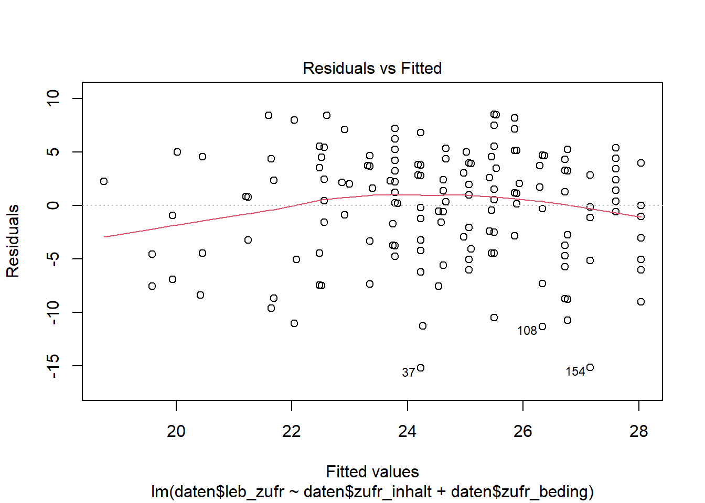 Die gestrichelte Linie bei \(y = 0\) zeigt den Erwartungswert der Residuen. Diese ist immer null und die Residuen sollten sich ohne erkennbares Muster, um diese Linie verteilen.
Die rote Linie ist die Lowess Fit Line. Diese sollte sich der gestrichelten Linie annähern, wenn der Zusammenhang zwischen Prädiktoren und Kriterium linear ist.
In unserem Beispiel legt der Residualplot nahe, dass der Zusammenhang zwischen Lebenszufriedenheit und Zufriedenheit mit Studieninhalten und -bedingungen weitgehend linear ist.
Die Annahme der Linearität wäre z.B. verletzt, wenn die Residuen einen U-förmigen Zusammenhang mit den vorhergesagten Werten aufweisen würden. Das würde nahelegen, dass ein quadratischer Zusammenhang zwischen dem Kriterium und den Prädiktoren besteht, der nicht adäquat modelliert wurde.

10.1.2 Umgang
Um einen angemessen Weg zu finden, um mit nicht-linearen Zusammenhängen zwischen den Variablen umzugehen, können wir die folgenden vier Fragen zur Eingrenzung nutzen:
- Gibt es eine Theorie, die einen spezifischen nicht-linearen Zusammenhang zwischen den integrierten Variablen vorhersagt?
- Wir sollten eine Regressionsgleichung aufstellen, die dem theoretisch implizierten mathematischen Zusammenhang widerspiegelt.
- Wie sieht der beobachtete bivariate Zusammenhang zwischen den Variablen aus?
- Wenn der Zusammenhang zwischen dem Kriterium und einzelnen Prädiktoren oder zwischen einzelnen Prädiktoren untereinander nicht-linear ist, können die Prädiktoren transformiert werden (z.B. \(log X_1\)). Die Art der Transformation hängt von der Art des Zusammenhangs ab.
- Wie sieht die Lowess Line in den originalen Daten aus? und
- Bleibt die Varianz der Residuen über den Bereich des Kriteriums hinweg konstant? (siehe Homoskedastizität)
- Homoskedastizität: Hierbei könnten wir einzelne Regressionsterme in Polynomen höherer Ordnung darstellen (z.B. \(X_1^2\), \(X_2^3\)). In einigen Fällen könnten einfache Potenzfunktionen nicht ausreichend sein. Dann könnten nichtparametrische Funktionen die bessere Lösung sein, um den Zusammenhang zwischen Kriterium und Prädiktoren zu spezifizieren.
- Heteroskedastizität: Wir könnten das Kriterium durch eine nichtlineare mathematische Funktion von \(Y\) ersetzen (z.B. \(log Y\)). Mit dieser Transformation entsprechen die Residuen nun den beobachteten \(log Y\) minus den vorhergesagten \(log \hat Y\).
10.2 Exogenität der Prädiktoren
Die Prädiktoren \(X\) sind unabhängig vom Fehlerterm der Regressionsgleichung \(e\): \(E(e|X)=0\).
Das impliziert z.B. perfekte Reliabilität und das alle relevanten Variablen im Modell aufgenommen sind, das heißt, dass es keine konfundierenden Variablen gibt. Das ist ein zentrales Anliegen in der Wissenschaft, jedoch ist Exogenität nicht leicht nachzuweisen.
Für unser Beispiel der Regression von ‘Zufriedenheit mit Studieninhalten’ und ‘Zufriedenheit mit Studienbedingungen’ auf ‘Lebenszufriedenheit’ müssten wir überlegen, ob noch andere Variablen einen Einfluss haben könnten. Beispielsweise könnten auch verschiedene Persönlichkeitsfaktoren mit ‘Lebenszufriedenheit’ zusammenhängen. Das würde sich dann darin äußern, dass die Prädiktoren noch systematische Varianz mit dem Fehlerterm teilen.
Wenn nicht alle relevanten Prädiktoren im Modell spezifiziert sind oder enthaltene Prädiktoren messfehlerbehaftet sind, können daraus verzerrte Regressionskoeffizienten und Standardfehler resultieren.
10.2.1 Überprüfung
Vor der Erhebung müssen wir uns sorgfältig Gedanken darüber machen, welche Prädiktoren relevant sind. Diese müssen vollständig in das Modell integriert werden. Beispielsweise sollten wir stets eine Literaturrecherche durchführen, um uns über den derzeitigen Stand der Forschung in einem Themenbereich zu informieren.
Zur Überprüfung der Exogenität könnten wir außerdem eine hierarchische Regression durchführen, in der wir schrittweise weitere Variablen aufnehmen. Wenn sich die Regressionsgewichte bei Aufnahme eines neuen Prädiktors ändern, war die Exogenitätsannahme der ursprünglichen Prädiktoren wahrscheinlich nicht erfüllt. Solche Modellvergleiche helfen bei der Beurteilung der Exogenität.
Wir sollten uns zusätzlich theoretisch überlegen, ob die gemessenen Prädiktoren messfehlerbehaftet sein könnten. Direkt beobachtbare Variablen (z.B. Alter, höchster Bildungsabschluss oder Körpergröße) stehen weniger im Verdacht, messfehlerbehaftet zu sein. Nicht direkt beobachtbare (latente) Variablen hingegen (z.B. Berufserfolg, Kreativität oder Wohlbefinden) können mit größerer Wahrscheinlichkeit messfehlerbehaftet sein.
Unsere Variablen ‘Lebenszufriedenheit’, ‘Zufriedenheit mit Studieninhalten’ und ‘Zufriedenheit mit Studienbedingungen’ sind alle latent. Von daher sind Messfehler wahrscheinlicher.
Wir sollten uns außerdem für die reliabelsten Erhebungsinstrumente für die Messung der Prädiktoren entscheiden. Wenn wir nicht an der Erhebung der Variablen beteiligt waren, sollten wir uns nachträglich über die Reliabilität der Erhebungsinstrumente informieren.
In unserem Fall des erstis-Datensatz gibt es leider keine weiteren Informationen zu den Erhebungsinstrumenten. So können wir leider nicht einschätzen, wie reliabel die Erhebungsinstrumente sind.
Die Reliabilität erhobener Variablen können wir auf verschiedene Arten schätzen. Diese werden in Abhängigkeit des Forschungsdesign und der Fragestellung ausgewählt.
Die Reliabilität der Messungen in unserem Beispiel könnten wir beispielsweise mit McDonald’s Omega bzw. dem gewichteten Omega berechnen.
10.3 Homoskedastizität
Die Varianz der Residuen \(s^2_{e}\) an einer bestimmten Stelle des Prädiktors ist für alle Prädiktorwerte gleich. Diese Varianz entspricht dem quadrierten Standardschätzfehler \(\sigma_e^2\) in der Population.
Die Annahme wäre beispielsweise verletzt, wenn mit steigenden Prädiktorwerten die Residuen größer, d.h. die Vorhersage mittels der Regressionsgerade ungenauer, werden würde.
Es kann vielfältige Gründe für Varianzheterogenität geben. So können z.B. stark abweichende Werte dafür verantwortlich sein (siehe Extreme Werte und einflussreiche Datenpunkte).
Nur unter Gültigkeit der Annahme ist die Berechnung der Standardfehler korrekt, aber Heteroskedastizität führt nicht zu verzerrten Regressionkoeffizienten.
Andere als die vorgestellten Möglichkeiten zur Überprüfung und zum Umgang mit Heteroskedastizität inklusive der Umsetzung in R finden wir z.B. auf R-bloggers.
10.3.1 Überprüfung
10.3.1.1 Residualplot
Zur Überprüfung der Homoskedastizität können wir ebenfalls einen Residualplot, wie schon bei der Überprüfung der Annahme der Linearität, verwenden.
plot(lm_lz, which = 1)
# erster Plot der plot()-Funktion für ein lm-Objekt ist der Residualplot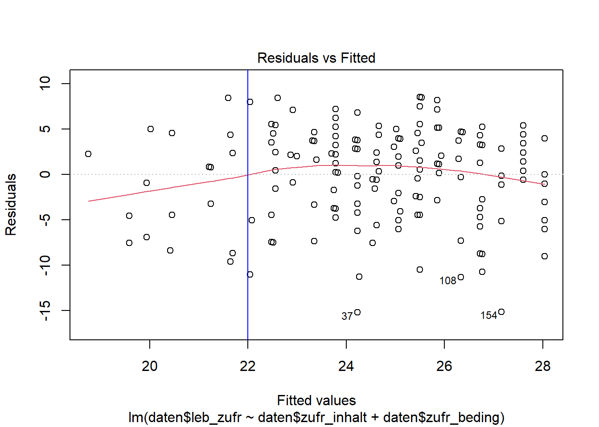
Die gestrichelte Linie bei \(y = 0\) zeigt den Erwartungswert der Residuen. Diese ist immer null und die Residuen sollten sich ohne erkennbares Muster, um diese Linie verteilen.
Die Annahme wäre z.B. verletzt, wenn die Residuen einen nach rechts geöffneten Trichter bilden würden. Das würde bedeuten, dass die Varianz mit größer werdenden \(X\)-Werten wachsen würde wie in nachfolgendem Beispiel illustriert:

10.3.1.2 Scale Location Plot
Mit dem Scale Location Plot schauen wir, ob die Standardabweichung der standardisierten Residuen \(\frac{e_i}{s_e}\) über den Bereich der vorhergesagten Werte hinweg gleich bleibt.
plot(lm_lz, which = 3) 
# dritter Plot der plot()-Funktion für ein lm-Objekt ist der Scale Location PlotDie standardisierten Residuen sollten auch hier gleichmäßig (zufällig) über den gesamten Bereich streuen. Außerdem sollte die Lowess Line möglichst horizontal zur \(x\)-Achse sein.
Auch der Scale Location Plot weist in unserem Beispiel auf ungefähre Varianzhomogenität hin. Das heißt, dass die standardisierten Residuen des Teils vom Kriterium ‘Lebenszufriedenheit’, der nicht durch die Prädiktoren ‘Zufriedenheit mit Studieninhalten’ und ‘Zufriedenheit mit Studienbedingungen’ vorhergesagt werden kann, gleichmäßig über die vorhergesagten Werte vom Kriterium ‘Lebenszufriedenheit’ streut.
Exkurs: Quantifizieren des Ausmaßes
Bisher haben wir uns angeschaut, ob Heteroskedastizität vorliegt. Diese hat aber erst einen substanziellen Einfluss auf die Regression, wenn das Ausmaß “groß” ist. Wir können die Varianzheterogenität (wenn die graphische Überprüfung darauf hindeutet) quantifizieren, um zu entscheiden, ob wir korrektive Maßnahmen durchführen sollten. Dazu schauen wir uns eine Möglichkeit aus dem Lehrbuch von Cohen, Cohen, West & Aiken (2003, S.146) an.
Dabei betrachten wir die konditionale (Fehler-)Varianz \(s^2_{(e | slice)}\) in sog. “Slices” (d.h. Gruppen) für einzelne Prädiktoren. Wir schauen uns das exemplarisch bei Zufriedenheit mit Studieninhalten an. Dazu nutzt man die Ergebnisse der einfachen Regression der Prädiktoren. Diese haben wir im Abschnitt Bivariate Streudiagramme schon einmal berechnet und darauf greifen wir jetzt wieder zurück.
Das Vorgehen:
- Sortieren der Residuen nach aufsteigendem Prädiktor X (Zufriedenheit mit Studieninhalten)
- in ähnlich große Slices einteilen
Die Wahl der Anzahl der Slices ist ein Tradeoff zwischen stabiler Varianzschätzung in jedem Slice (d.h. wenig Gruppen) und der Begutachtung verschiedener Anteile der Daten (d.h. viele Gruppen). - konditionale Varianz in den Slices berechnen
Dazu quadrieren wir die einzelnen Residuen, teilen diese jeweils durch die Anzahl der Personen in diesem Slice \(n_{slice}\) minus 2, und summieren die Quotienten auf.
Zur Beurteilung der konditionalen Varianz gibt es zwei Kriterien:
- der Quotient aus dem Slice mit der größten konditionalen Varianz geteilt durch den Slice mit der kleinsten konditionalen Varianz sollte kleiner als 10 sein
- mit größer werdendem X sollte die konditionale Varianz in den Slices nicht systematisch variieren (z.B. konstant kleiner oder größer werden)
Wenn der Quotient \(> 10\) ist oder es systematische Variation gibt, sollten wir korrektive Maßnahmen einleiten
Nachfolgend schauen wir uns die Umsetzung dazu in R an:
# Objekt erzeugen, ...
# ... in dem die Residuen nach aufsteigender Größe in X sortiert sind:
quant <- data.frame(erstis$zuf.inh.1,
residuals(lz_inh))[order(erstis$zuf.inh.1,
residuals(lz_inh)),]
# data.frame() erstellt einen Dataframe aus den übergebenen Variablen
# order() sortiert das erste Argument X aufsteigend (Default) ...
# ... und gleiche Ausprägungen in X werden nach den Ausprägungen ..
# ... des zweiten Arguments (hier: Residuen) sortiert
# das Komma am Ende sagt, dass wir Zeilen sortieren wollen
# mit [ ] bekommen wir die Indizes (und nicht die Werte) ausgegeben, ...
# ... welche wiederum auf den Dataframe angewendet werdenStandardmäßig wird so die erste Variable X aufsteigend sortiert, weil order(..., decreasing=FALSE) der Default ist. Mit decreasing=TRUE können wir absteigend sortieren.
> Achtung:
order() vor die zweite Variable (resid) ein - setzen oder nicht:Mit resid (so wie wir es im Beispiel machen) wird innerhalb der gleichen Prädiktorwerte aufsteigend sortiert.
Mit -resid wird innerhalb der gleichen Prädiktorwerte absteigend sortiert.
Dadurch kommen unterschiedliche Residuen in die Slices und folglich werden auch unterschiedliche konditionale Varianzen berechnet!
quant <- na.exclude(quant) # Missings raus# Anzahl der Fälle
nrow(quant) # 165
# Einteilung: 3 Gruppen á 41 Personen, 1 Gruppe mit 42 Personen
slice_1 <- quant$residuals.lz_inh.[1:41]
slice_2 <- quant$residuals.lz_inh.[42:82]
slice_3 <- quant$residuals.lz_inh.[83:123]
slice_4 <- quant$residuals.lz_inh.[124:165]
# konditionale Varianz in Slices berechnen
var_slice_1 <- sum((slice_1^2/(length(slice_1)-2)))
var_slice_2 <- sum((slice_2^2/(length(slice_2)-2)))
var_slice_3 <- sum((slice_3^2/(length(slice_3)-2)))
var_slice_4 <- sum((slice_4^2/(length(slice_4)-2)))
# konditionale Varianzen in Vektor speichern
sort_var <- c(var_slice_1 , var_slice_2, var_slice_3, var_slice_4)sort_var## [1] 40.79699 25.91895 21.15083 24.16912In unserem Beispiel scheint es keine systematischen Zu- oder Abhnahme in den konditionalen Varianzen der Slices zu geben …
round((var_slice_1 / var_slice_3), 3)## [1] 1.929… und auch der Quotient zwischem dem Slice mit der größten und der kleinsten konditionalen Varianz ist relativ klein.
10.3.2 Umgang
Wenn wir heteroskedastische Residuen haben, sollten wir gegen die potentielle Verzerrung der Standardfehler vorgehen. Dazu könnten wir beispielsweise Methoden zur Korrektur der Standardfehler oder varianzstabilisierende Verfahren, wie die Box-Cox-Transformation, nutzen. Eine andere Alternative wäre es, auf robustere Verfahren wie die gewichtete Regression mittels WLS zurückzugreifen.
Exkurs: WLS-Regression
Der weighted least squares Schätzer gewichtet jeden Fall (d.h. jede Person) danach, wie präzise die Beobachtung von \(Y\) für diesen Fall war. Das bedeutet, dass Beobachtungen mit geringen (Fehler-)Varianzen höher gewichtet werden als Beobachtungen mit großen (Fehler-)Varianzen. Anders ausgedrückt werden Beobachtungen, die näher an der Regressionsgerade sind, stärker gewichtet. Im Vergleich dazu gewichtet der standardmäßig genutzte OLS-Schätzer (Ordinary Least Squares, Methode der kleinsten Quadrate) jede Beobachtung gleich.
Es gibt mehrere Möglichkeiten, die Gewichte \(w_i\) zu schätzen. Im Folgenden schauen wir uns exemplarisch eine Methode aus dem Buch von Cohen, Cohen, West & Aiken (2003, S.146-147) an.
> Achtung:
Dazu nehmen wir die Residuen aus der OLS-Regression, quadrieren diese und regredieren sie auf unsere Prädiktoren. Die Inversen dieser vorhergesagten quadrierten Residuen sind das unsere Gewichte für die WLS-Regression.
weights_lm <- lm(daten$resid ^ 2 ~ daten$zufr_inhalt + daten$zufr_beding,
na.action = "na.exclude")
# wieder na.exclude nutzen
# sonst hat der Vektor mit den Gewichten wieder eine geringere Länge
daten$gewichte <- fitted.values(weights_lm)Zur Modellschätzung können wir wieder lm() nutzen. Dafür müssen wir nur zusätzlich den Gewichtsvektor im Argument weights spezifizieren.
# WLS-Regression
lm_wls <- lm(daten$leb_zufr ~ daten$zufr_inhalt + daten$zufr_beding,
weights = 1 / daten$gewichte, na.action = "na.exclude")
# Vergleich der OLS- und WLS-Schätzung
summary(lm_lz)$coefficients## Estimate Std. Error t value Pr(>|t|)
## (Intercept) 12.791048 2.3391903 5.468152 1.704375e-07
## daten$zufr_inhalt 2.499315 0.6869872 3.638081 3.694881e-04
## daten$zufr_beding 1.312796 0.5743345 2.285769 2.357195e-02summary(lm_wls)$coefficients## Estimate Std. Error t value Pr(>|t|)
## (Intercept) 12.889931 2.3951572 5.381664 2.566204e-07
## daten$zufr_inhalt 2.545507 0.6966131 3.654119 3.488119e-04
## daten$zufr_beding 1.222937 0.5605375 2.181723 3.057982e-02Wir sehen, dass die Schätzungen von WLS denen von OLS sehr nah ist. Relevant wären hier prinzipiell mehr die Standardfehler (die bei Varianzheterogenität und OLS verzerrt wären). Da wir aber von Varianzhomogenität in unserem Beispiel ausgehen, sind auch diese sehr ähnlich.
Achtung:Es gibt zwei Schwierigkeiten im Umgang mit dem WLS-Schätzer:
- wir müssen ein angemessenes Gewicht für jede Beobachtung wählen
- wenn die Gewichte nicht angemessen sind, ist WLS kein guter Schätzer
- daher ist die WLS-Schätzung am besten, wenn die Stichprobengröße \(N\) groß ist oder wenn es mehrere Beobachtungen mit identischen \(X\)-Werten gibt (d.h. mehrere Personen mit den gleichen Ausprägungen auf dem jeweiligen Prädiktor)
- standardisierte Effektgrößen, wie z.B. der Determinationskoeffizient \(R^2\), haben keine eindeutige Interpretation (wie bei OLS)
Daher sollten wir eher OLS als WLS nutzen, außer wenn die Stichprobengröße sehr groß ist oder es ein großes Problem mit Heteroskedastizität gibt.
10.4 Unabhängigkeit der Residuen
Die Höhe des Residuums einer Beobachtung \(\hat e_i\) hängt nicht von der Höhe des Residuums einer anderen Beobachtung \(\hat e_x\) ab.
Wenn Residuen abhängig sind, kann sich das auch in Heteroskedastizität äußern.
Residuen sind abhängig, wenn wir z.B. wiederholte Messungen oder Gruppenstrukturen untersuchen. Ersteres meint, dass mehrere Messungen von einer Person, d.h. zu mehreren Zeitpunkten, vorliegen. In diesem Fall sprechen wir auch von seriellen Abhängigkeiten. Zweiteres meint, dass die Daten “geclustert” sind und es somit systematische Zusammenhänge zwischen Personen gibt z.B. Schüler in einer Schulklasse. Beide Fälle müssen bei der Modellspezifikation berücksichtigt werden.
In unserem Beispiel könnte beispielsweise das Kriterium ‘Lebenszufriedenheit’ in Abhängigkeit vom Wohnort variieren. Damit wären die Daten geclustert.
Abhängigkeit der Residuen führt zwar nicht zu verzerrten Regressionskoeffizienten, aber es kann zu verzerrten Standardfehlern führen.
10.4.1 Überprüfung
Ganz grundsätzlich können wir diese Annahme zuerst einmal theoretisch überprüfen, indem wir uns das Studiendesign der erhobenen Daten anschauen.
Wenn nur zu einem Messzeitpunkt Daten erhoben wurden und jede Person nur einmal zu diesem befragt wurde, können wir serielle Abhängigkeiten ausschließen.
Beim Clustering ist es etwas schwieriger, dieses nur durch Überlegung auszuschließen. Auch wenn im Studiendesign nicht vorgesehen war, dass Daten von unterschiedlichen Gruppen erhoben wurden, könnte es dennoch Ähnlichkeiten zwischen Personen hinsichtlich bestimmter Variablen geben. Um mögliche Verletzungen der Unabhängigkeitsannahme prüfen zu können, benötigen wir eine Vermutung darüber, welche Gruppierungsvariablen relevant sein könnten.
10.4.1.1 Ausmaß serieller Abhängigkeit
Es gibt mehrere Möglichkeiten, das Ausmaß serieller Abhängigkeit zu beurteilen. Im Folgenden werden zwei grafische Visualisierungen vorgestellt.
10.4.1.1.1 Index Plot
Einen Eindruck darüber, ob es systematische Abhängigkeiten zwischen den Residuen gibt, können wir mithilfe des Index Plot bekommen. Dieser ist ein Scatterplot, der die Residuen \(\hat e_i = y_i - \hat y_i\) (\(y\)-Achse) gegen den Index \(i\) (\(x\)-Achse), der zumeist durch die (aufsteigende) Zeilennummerierung repräsentiert wird, plottet.
Hierbei können wir u.a. visualisieren, ob es zeitliche Abhängigkeiten gibt, z.B. ob Personen, die später an der Befragung teilgenommen haben, systematische Unterschiede in ihrer Lebenszufriedenheit (Kriterium) zeigen.
Um das besser beurteilen zu können, können wir auch hier wieder die Lowess Line einzeichnen. Diese sollte wieder möglichst horizontal zur \(x\)-Achse bei \(y = 0\) liegen. Beide Linien fügen wir zur Vereinfachung der Beurteilung des Plots hinzu.
plot(lm_lz$residuals)
lines(lowess(lm_lz$residuals), col = "red") # Lowess Line einfügen (in rot)
abline( # Linie einzeichnen
h=0, # h - horizontal, 0 - Schnittpunkt mit y-Achse
col="grey", # Farbe
lty=3) # Linien-Art: gestrichelt
Die Abbildung impliziert, dass die Residuen unabhängig sind. Das entspricht unseren Vorüberlegungen, das wir nur Variablen haben, die zum gleichen Messzeitpunkt erhoben wurden.
Exkurs: Grafische Interpretationshilfe für den Index Plot
Falls wir ein Messwiederholungsdesign haben und die Daten im Long-Format (d.h. Messungen einer Person in mehreren Zeilen) vorliegen, können wir die Messungen verschiedener Person farblich unterschiedlich darstellen.
In unserem Fall haben wir zwar keine Messwiederholung, aber wir illustrieren die farbliche Darstellung einmal am gleichen Beispiel.
Die Farbe der geplotteten Elemente können wir mit dem Argument col verändern. Um die Farbe ab einer bestimmten Anzahl an Messungen (d.h. Messwiederholungen für eine Person) jeweils zu verändern, können wir rep() benutzen. Diese Funktion wiederholt das erste Argument x (bzw. die einzelnen Elemente des ersten Arguments) jeweils so oft wie das zweite Argument each.
plot(lm_lz$residuals, col = rep(1:17, each = 10))
lines(lowess(lm_lz$residuals), col = "red")
abline(h=0, col="darkblue", type="l", lty=3)## Warning in int_abline(a = a, b = b, h = h, v = v, untf = untf, ...): graphical
## parameter "type" is obsolete
Die 10 steht dafür, dass wir 10 Messwiederholungen haben. 1 bis 17 kodiert unterschiedliche Farbe. Alternativ können wir auch die Farbnamen in einem Vektor spezifizieren - dann würden wir anstatt 1:17 z.B. c(‘red’, ‘blue’, ‘green’, …) einfügen.
Mit dem Argument pch können wir analog die Form der Punkte ändern.
plot(lm_lz$residuals, pch = rep(1:17, each = 10))
lines(lowess(lm_lz$residuals), col = "red")
abline(h=0, col="darkblue", type="l", lty=3)## Warning in int_abline(a = a, b = b, h = h, v = v, untf = untf, ...): graphical
## parameter "type" is obsolete
Wenn es starke serielle Abhängigkeiten geben würde, würden sich die Fälle sichtlich voneinander unterscheiden bzw. Cluster bilden. Illustriert ist das im folgenden Plot:
## Warning in int_abline(a = a, b = b, h = h, v = v, untf = untf, ...): graphical
## parameter "type" is obsolete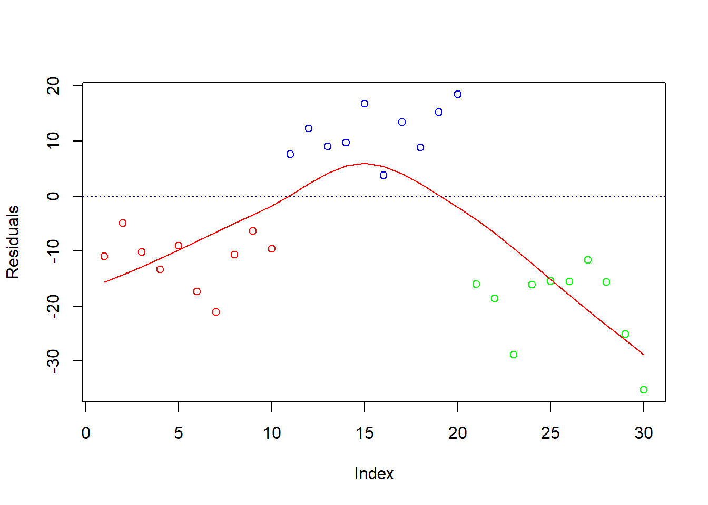
10.4.1.2 Ausmaß des Clusterings
Zu allererst können wir uns den Intraklassenkoeffizienten (IKK) anschauen. Dieser schätzt den Anteil der Varianz einer Variable, die durch Gruppenzugehörigkeit (Clustering) erklärt wird.
Achtung: Der IKK sollte allerdings nicht als einzige Methode zur Überprüfung des Clusterings herangezogen werden, weil wir uns hier nur Mittelwertsunterschiede anschauen. Daher wird noch eine weitere Methode, die Betrachtung von Boxplots der geclusterten Gruppen, illustriert.
10.4.1.2.1 Intraklassenkorrelation
Beispielsweise können wir mit Hilfe des IKK beurteilen, wie stark sich Personen innerhalb einer Gruppe ähneln.
- Je näher der Wert an \(0\) ist, desto geringer ist der relative Anteil an Unterschieden zwischen den Gruppen (d.h. desto weniger Clustering liegt vor).
- Je näher der Wert an \(1\) ist, desto geringer ist der relative Anteil an Unterschieden innerhalb einer Gruppe (d.h. desto mehr Clustering liegt vor).
Zur Überprüfung können wir z.B. die Funktion ICCest aus dem Paket ICC nutzen.
Für unser Beispiel schauen wir uns exemplarisch an, inwieweit Unterschiede in ‘Lebenszufriedenheit’ (Kriterium) durch ‘Gruppenzugehörigkeit im Wintersemester’ (erstis$gruppe) erklärt werden können.
Dazu fügen wir diese Variable zu unserem Datensatz hinzu.
daten$gruppe <- erstis$gruppe
library(ICC)
ICCest(daten$gruppe, daten$leb_zufr)## NAs removed from rows:
## 27 140## Warning in ICCest(daten$gruppe, daten$leb_zufr):## $ICC
## [1] 0.005398465
##
## $LowerCI
## [1] -0.01305084
##
## $UpperCI
## [1] 0.2595086
##
## $N
## [1] 4
##
## $k
## [1] 47.05115
##
## $varw
## [1] 31.43056
##
## $vara
## [1] 0.1705978Die Funktion gibt uns folgende Outputs:
- welche Missings (d.h. Zeilen) entfernt wurden
$ICC: die IKK (Punktschätzung)$LowerCIund$UpperCI: die Grenzen des Konfidenzintervalls für den IKK (Intervallschätzung)$N: die Anzahl an Gruppen$k: die Anzahl der Personen in jeder Gruppe$varw: die Varianz innerhalb einer Gruppe$vara: die Varianz zwischen den Gruppen
Die IKK weist darauf hin, dass wenig Varianz durch die Kurszugehörigkeit erklärt wird. Es ist also nicht notwendig, dass wir die Gruppenzugehörigkeit in unserem Modell berücksichtigen.
10.4.1.2.2 Boxplots der geclusterten Gruppen
Zuletzt schauen wir uns die Boxplots der Verteilungen der Residuen in den Gruppen an.
Zur Erleichterung der Interpretation zeichnen wir wieder mit Hilfe von abline(h=0, col="darkblue", type="l", lty=3) eine Senkrechte bei \(y=0\) (weil der erwartete Mittelwert der Residuen \(0\) ist).
plot(daten$resid ~ daten$gruppe)
abline(h=0, col="darkblue", type="l", lty=3)## Warning in int_abline(a = a, b = b, h = h, v = v, untf = untf, ...): graphical
## parameter "type" is obsolete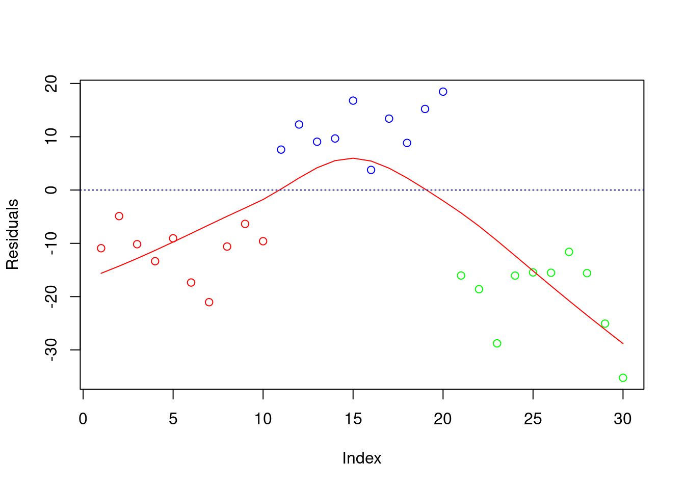
Die Interpretation hier ist ähnlich zu den Resiualplots: Der Median der einzelnen Gruppen sollte jeweils nah an der gestrichelten Linie bei \(y=0\) sein. Zusätzlich sollten die Verteilungen sich stark überlappen.
Die Verteilungen der Residuen in den Gruppen sieht sehr ähnlich aus. Die Verteilungen überlappen sich deutlich. Es scheint keine systematischen Streuungsunterschiede in den Residuen in Abhängigkeit der Gruppenzugehörigkeit zu geben.
10.4.2 Umgang
10.4.2.1 Serielle Abhängigkeit
Liegen serielle Abhängigkeiten vor, müssen wir auf geeignete Verfahren zur Analyse von Längsschnittdaten zurückgreifen (z.B. gemischte lineare Modelle).
10.4.2.2 Clustering
Liegen Abhängigkeiten aufgrund von Gruppenunterschieden vor, können wir versuchen, die Gruppenunterschiede, in Form von weiteren Variablen, ins Modell aufzunehmen. Gelingt dies nicht, müssen wir auf geeignete Verfahren zur Analyse von „geclusterten“ Daten zurückgreifen (z.B. gemischte lineare Modelle).
10.5 Weitere wichtige Aspekte
10.5.1 Normalverteilung der Residuen
Die Annahme, dass die Residuen in der Population normalverteilt sind, ist eigentlich gar keine Annahme im engeren Sinne. Aufgrund des zentralen Grenzwertsatzes sind die Regressionskoeffizienten in großen Stichproben selbst dann asymptotisch normalverteilt, wenn die Annahme nicht erfüllt ist. Daher ist eine Verletzung der Annahme eher in kleineren Stichproben problematisch. Da in der Praxis aber unklar ist, wann eine Stichprobe als groß genug anzusehen ist, ist es ratsam, die Verteilung der Residuen immer auf Abweichung von einer Normalverteilung hin zu prüfen.
Wenn die Normalverteilungsannahme der Residuen verletzt ist, ist der Standardfehler womöglich verzerrt, was zu falschen inferenzstatistischen Schlüssen führen kann.
Nicht normalverteilte Residuen können auch auf andere Probleme wie Modellmissspezifikation hinweisen.
10.5.1.1 Überprüfung
10.5.1.1.1 Histogramm
Mit Hilfe eines Histogramms können wir uns die Häufigkeitsverteilung einer metrischen Variable anzeigen lassen. Dafür wird diese in verschiedene Klassen (‘bins’) eingeteilt. Das schauen wir uns für die Residuen an.
hist(lm_lz$residuals)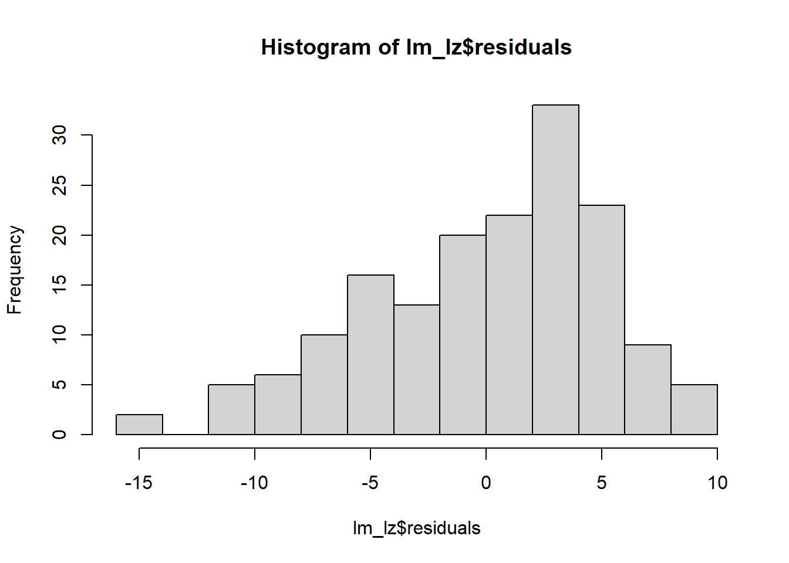
Optisch sollte ungefähr eine Normalverteilung zu erkennen sein.
In unserem Beispiel sieht es jedoch nach einer linksschiefen (d.h. rechtssteilen) Verteilung der Residuen aus.
Exkurs: Graphische Interpretationshilfe für das Histogramm
Um die Beurteilung des Histogramms zu erleichtern, können wir zwei Linien einzeichnen - die reale Dichtefunktion der Variablen und die erwartete Dichtefunktion, wenn die Variable normalverteilt wäre. Diese können wir vergleichen, um die Annahme der Normalverteilung zu überprüfen.
Eine wichtige Voraussetzung dafür, dass wir über das Histogramm die Dichtefunktionen legen können, ist dass wir das Argument prob=TRUE setzen.
Dann zeichnen wir die reale Dichtefunktion der Residuen ein. Dafür kombinieren wir line() und density(). Erstere zeichnet eine Linie in eine Grafik ein und mit zweiterer spezifizieren wir, dass die Linie die geschätzte Dichte (der Residuen) visualisieren soll.
Für die normalverteilte Dichtefunktion der Residuen nutzen wir curve() und dnorm(). Mit ersterer wird eine Kurve auf Basis einer mathematischen Funktion eingezeichnet. Mit zweiterer geben wir an, dass es eine Dichtefunktion einer Normalverteilung sein soll, für die wir Mittelwert und Standardabweichung (der Residuen) angeben. Zusätzlich müssen wir hier mit add=TRUE festlegen, dass die Kurve über das Histogramm gelegt werden soll.
Um die Normalverteilung besser anschauen zu können, erweitern wir die \(x\)-Achse. Das machen wir mit xlim=c(-15, 15). Die Wahl der Grenzen von \(-15\) bis \(+ 15\) - ist eine theoretische Überlegung. Bei einer Normalverteilung liegen ~ \(99\)% der Werte im Bereich \(+/- 3\) Standardabweichungen vom Mittelwert entfernt. Die Standardabweichung der Residuen beträgt ~ 5.105.
Für eine bessere Übersichtlichkeit stellen wir die reale Dichtefunktion und die erwartete Dichtefunktion farblich dar.
hist(lm_lz$residuals, # Histogramm der Residuen ...
prob = TRUE, # ... als Dichte ...
xlim = c(-20, 20)) # ... mit veränderter X-Achse
lines( # erstellt eine Linie ...
density( # ... auf Basis der geschätzten Dichtefunktion ...
lm_lz$residuals), # ... der Residuen ...
col = "orange") # ... in orange
curve( # erstellt eine Kurve ...
dnorm( # ... einer normalverteilten Dichtefunktion ...
x, mean = mean(lm_lz$residuals), # ... auf Basis des Mittelwerts ...
sd = sd(lm_lz$residuals)), # ... und der Standardabweichung der Residuen ...
col = "green", #... in grün ...
add = TRUE) # ... die zu bestehendem Plot hinzugefügt wird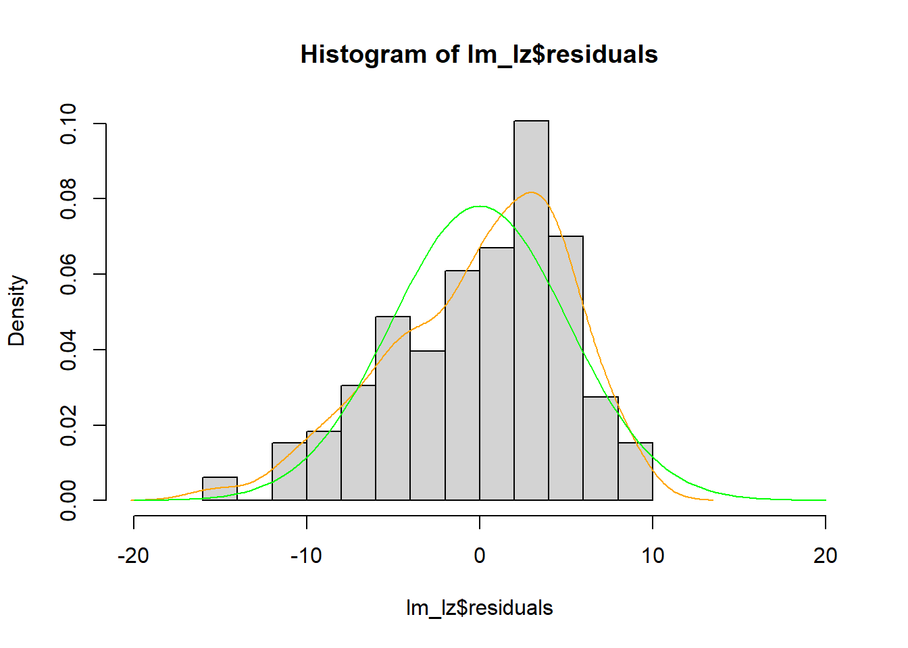
Anhand dieser beiden Linien wird noch deutlicher, dass die Verteilung der Residuen in unserem Beispiel von einer Normalverteilung abweicht.
10.5.1.1.2 QQ-Plot
Der QQ-Plot (Quantil-Quantil-Plot) plottet die aufsteigend geordneten standardisierten Residuen gegen die korrespondierenden Quantile der Normalverteilung. Dafür werden die Residuen durch den Standardschätzfehler geteilt \(\frac {e_i} {\hat {\sigma}}\).
plot(lm_lz, which = 2)
# zweiter Plot der plot()-Funktion für ein lm-Objekt ist der QQ-Plot
abline(v = 1, col = "blue") # zur Illustration für unser Beispiel
In der obigen Abbildung werden die theoretischen Quantile der Normalverteilung (\(x\)-Achse) gegen die standardisierten Residuen (\(y\)-Achse) abgetragen. Wenn die Residuen normalverteilt sind, sollten die Punkte ungefähr auf der winkelhalbierenden Geraden (gestrichelte Linie) liegen. Kleinere Abweichungen, vor allem an den Enden der Geraden (unten links und oben rechts) sind in der Praxis aber nicht ungewöhnlich und oftmals nicht weiter problematisch.
In unserem Beispiel weichen viele Punkte mit höheren Ausprägungen (rechts von der blauen Linie) von der winkelhalbierenden Geraden ab, was für eine gewisse Verletzung der Normalverteilungsannahme spricht.
Wenn wir sehen wollen, wie der QQ-Plot bei verschiedenen Verteilungsformen aussehen kann, können wir uns diesen Forumseintrag zu QQ-Plots anschauen.
Exkurs: Shapiro-Wilk-Test
Wir haben eingangs schon angerissen, warum graphische Verfahren besser geeignet sind, um Annahmen zu überprüfen. Für die Überprüfung der Normalverteilung der Residuen mittels statistischer Tests gelten die gleichen Vorbehalte: Wenn die Stichprobe groß ist, haben wir viel Power auch kleinste Abweichungen von der Normalverteilung zu finden. Gerade in dieser Situation (d.h. bei grossem \(N\)) sind Abweichungen von der Normalverteilung aber gar nicht so problematisch. Bei kleinem \(N\) hingegen (wenn Abweichungen potentiell gefährlich sind), fehlt dem Test dann aber oft die Teststärke Abweichungen korrekt zu erkennen.
Mit dem Shapiro-Wilk-Test kann getestet werden, ob Daten normaltverteilt sind (\(H_0\)) oder nicht (\(H_1\)).
Der Test wird mit der Funktion shapiro.test() durchgeführt. Um die Residuen der Regression zu testen, extrahieren wir diese wieder aus dem Ergebnisobjekt mit lm_lz$residuals.
shapiro.test(lm_lz$residuals)##
## Shapiro-Wilk normality test
##
## data: lm_lz$residuals
## W = 0.96198, p-value = 0.0001845In unserem Beispiel kann die Nullhypothese abgelehnt werden, d.h. dass die Residuen nicht normalverteilt sind.
10.5.1.2 Umgang
Zuerst sollten wir überprüfen, ob die Abweichung von der Normalverteilung auf eine Missspezifikation des Modells zurückzuführen ist.
Wenn das nicht zutrifft und die Stichprobe klein ist, sollten wir korrektive Maßnahmen einleiten. Wir könnten die Daten transformieren, wie bei Umgang mit Nicht-Linearität, allerdings könnte das auch die getesteten Hypothesen ändern, z.B. vergleichen wir nach der log-Transformation keine arithmetischen Mittel mehr sondern geometrische Mittel. Alternativ könnten wir auch robuste Testverfahren anwenden.
10.5.2 Multikollinearität
Wenn Prädiktoren sehr hoch miteinander korrelieren, spricht man von Multikollinearität. Dabei können wir außerdem zwischen non-essentieller und essentieller Mutlikollinearität unterscheiden.
Non-essentielle Multikollinearität entsteht dadurch, dass Prädiktoren nicht zentriert sind.
Essentielle Multikollinearität entsteht durch tatsächliche Zusammenhänge zwischen Variablen in der Population. Diese Abhängigkeiten zwischen Prädiktoren äußern sich dadurch, dass die Varianz eines Prädiktors großteilig durch die anderen Prädiktoren erklärt werden kann, er sich also aus einer Linearkombination der anderen Prädiktoren ergibt z.B. \(X_1=1,2,3\) und \(X_2=2,4,6\).
Multikollinearität kann aber beispielsweise auch vorliegen, wenn die Anzahl an Prädiktoren \(k\) größer ist als die Größe der Stichprobe \(N\) oder wenn wir im Modell versehentlich zweimal den gleichen Prädiktor spezifiziert haben. Multikollinearität tritt außerdem häufig bei Interaktionen zwischen Prädiktoren auf. Das kommt daher, dass eine Interaktion ein Produkt aus zwei Prädiktoren ist und folglich viel Gemeinsamkeit mit beiden Prädiktoren hat.
Bei sehr hohen Korrelationen zwischen den Prädiktoren, ergeben sich folgende Probleme:
- Erschwerte Interpretation der partiellen Korrelationen. Weil sich die Prädiktoren einen großen Anteil an der erklärten Varianz des Kriteriums teilen ist unklar, welchem Prädiktor welcher Anteil zugeschrieben werden soll. Um die Anteile der Varianzaufklärung besser den Prädiktoren zuordnen zu können, könnten wir die Reihenfolge der Aufnahme der Prädiktoren im Modell ändern (hierarchisches Vorgehen). Dabei schauen wir uns die Differenzen der Determinationskoeffizienten \(R^2_{k+m} - R^2_k\) der Modelle (die sich durch einen weiteren Prädiktor \(m\) unterscheiden) an.
- Erhöhte Standardfehler. Die Standardfehler der von Multikollinearität betroffenen Regressionkoeffizienten vergrößern sich (siehe Toleranz und Formel des Standardfehlers der Regressionsgewichte), was wiederum zu breiteren Konfidenzintervallen und einer geringeren Wahrscheinlichkeit führt, die Nullhypothese abzulehnen, wenn tatsächlich ein Effekt vorliegt (d.h. geringere Power).
10.5.2.1 Überprüfung
Um festzustellen, ob Prädiktoren hoch miteinander korreliert sind, können wir uns die Toleranz und den Variance Inflation Factor anschauen. Beide hängen direkt miteinander zusammen, aber ihre Interpretationen sind unterschiedlich.
Falls wir ein ernsthaftes Problem mit Multikollinearität haben, wird uns das in R teilweise mit z.B. aliased coefficients oder 1 coefficient not defined because of singularities angezeigt.
Im Paket mctest gibt es zwei Funktionen, die helfen, Multikollinearität zu entdecken - omctest() - und zu lokalisieren - imctest(). Hierfür werden jeweils verschiedene Maße zu Rate gezogen u.a. auch die Toleranz und der VIF. Da wir die anderen Maße aber nicht vertiefend behandeln, sei an dieser Stelle nur auf das Paket hingewiesen. Bei Interesse empfielt es sich, den Artikel der Entwickler mctest: An R Package for Detection of Multicollinearity among Regressors zu lesen, in dem die Maße kurz erklärt und weiterführende Quellen angegeben werden.
10.5.2.1.1 Toleranz
Die Toleranz sagt uns, wie viel Varianz in \(X_j\) unabhängig von den anderen Prädiktoren ist.
Dafür wird eine Regression von Prädiktor \(X_j\) auf alle anderen Prädiktoren im Modell gerechnet (d.h. das Kriterium bleibt außen vor) und davon der Kehrwert gebildet. Sie ist somit ein Maß für die Uniqueness von \(X_j\). Die Tolreanz wird wie folgt berechnet: \(1 - R^2_j\)
In R können wir die Toleranz z.B. über den Kehrwert des Variance Inflation Factors, mit der Funktion vif() aus dem Paket car, berechnen. Der Funktion übergeben wir unser lm-Objekt.
library(car)
1 / vif(lm_lz)## daten$zufr_inhalt daten$zufr_beding
## 0.8988664 0.8988664Je kleiner die Toleranz ist, desto größer das Problem mit Multikollinearität. \(Tol_j = 0\) impliziert perfekte Multikollinearität. \(Tol_j~ < 0.10\) deutet auf ein ernsthaftes Problem mit Multikollinearität hin.
Ungefähr 89.9% der Varianz in Zufriedenheit mit Studienbedingungen ist unabhängig von Zufriedenheit mit Studieninhalten (für den Fall von genau zwei Prädiktoren, wie in unserem Beispiel, gilt auch die umgekehrte Interpretation).
10.5.2.1.2 Variance Inflation Factor
\(VIF_j\) gibt an, um wie viel die Varianz des Regressionskoeffizients \(X_j\) (durch die Korrelation mit den anderen Prädiktoren) erhöht wird, verglichen mit dem Fall, dass alle Prädiktoren unkorreliert sind.
\(\sqrt {VIF_j}\) gibt an, um welchen Faktor sich der Standardfehler \(SE_{b_j}\) durch Einschluss weiterer korrelierter Prädiktoren erhöht (verglichen mit dem Fall, dass alle Prädiktoren unkorreliert sind).
Der VIF wird für jeden Prädiktor im Modell berechnet. Er wird folgendermaßen bestimmt: \(\frac{1}{1 - R^2_j}\), wobei \(R^2_j\) der Determinationskoeffizient der Regression des \(j\)-ten Prädiktors auf alle anderen \((k - 1)\) Prädiktoren ist. Das entspricht der quadrierten multiplen Korrelation zwischen \(X_j\) und allen anderen Prädiktoren.
Achtung: Im Fall von zwei Prädiktoren bleibt die geteilte Varianz zwischen beiden Variablen gleich; egal welche Variable Kriterium und welche Prädiktor ist. Daher sind beide VIF gleich.
Dazu nutzen wir aus dem Paket car die Funktion vif(), welcher wir unser lm-Objekt übergeben.
library(car)
vif(lm_lz)## daten$zufr_inhalt daten$zufr_beding
## 1.112512 1.112512Als Daumenregel gilt, dass ein VIF größer als 10 auf ein Problem mit Multikollinearit hindeutet.
Der VIF in unserem Beispiel ist sehr klein, d.h. dass unsere beiden Prädiktoren Zufriedenheit mit Studieninhalten und Zufriedenheit mit Studienbedingungen nicht viel gemeinsame Varianz teilen.
10.5.2.2 Umgang
In einer Regression, die auch Interaktionen zwischen den Prädiktoren annimmt, können wir die Prädiktoren zentrieren, um non-essentieller Multikollinearität beizukommen. Hierbei sollten wir aber bei Vorhandensein von Dummyvariablen vorsichtig sein. Diese müssen nicht zentriert werden und eine Zentrierung erschwert zusätzlich ihre Interpretation.
Bei hoher essentieller Multikollinearität ist es oftmals ratsam, Prädiktoren auszuschließen, wenn diese weitgehend redundante Informationen liefern.
10.5.3 Extreme Werte und einflussreiche Datenpunkte
Extreme Werte, auch Ausreißer (Outlier) genannt, meinen untypische Datenpunkte, die nicht zum Rest der Daten passen. Diese können sowohl auf dem Kriterium als auch auf den Prädiktoren vorkommen.
- Wenn ein extremer Wert auf dem Kriterium vorkommt, heißt das, dass die Prädiktorwerte einer Person \(i\) zwar im Wertebereich der anderen Personen liegen, aber der beobachtete Wert \(y_i\) stark vom vorhergesagten \(\hat y_i\) abweicht (Abweichung in \(Y\)).
- Wenn extreme Werte auf den Prädiktoren vorkommen, heißt das, dass die Prädiktorwerte einer Person \(i\) nicht im Wertebereich der anderen Personen liegen (Abweichung in \(X\)), aber der beobachtete Wert \(y_i\) dennoch nah am vorhergesagten \(\hat y_i\) ist. Extreme Werte auf den Prädiktoren haben zusätzlich eine hohe Leverage/Hebelwirkung und damit potenziell einen starken Einfluss auf die Regressionsgerade.
In den folgenden drei Abbildungen sehen wir verdeutlicht, was mit extremen Abweichungen auf dem Kriterium bzw. den Prädiktoren gemeint ist. Dazu wurden exemplarisch Lebenszufriedenheit (\(Y\)) und Zufriedenheit mit Studieninhalten (\(X_1\)) gegeneinander geplottet. Hierbei wurde jeweils der \(Y\)- bzw. \(X_1\)-Wert von Person 50 geändert. Die gestrichelte Linie stellt dabei jeweils die obere Grenze des Wertebereichs des Kriteriums bzw. des Prädiktors dar.
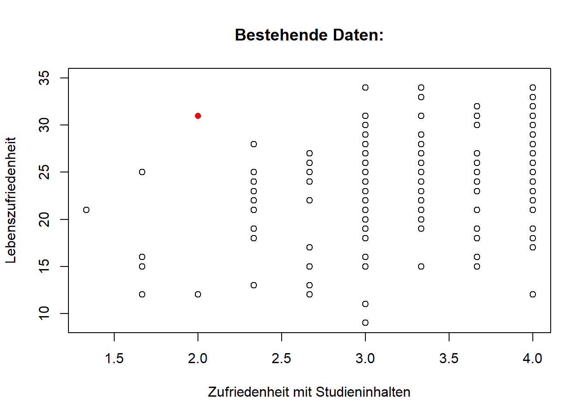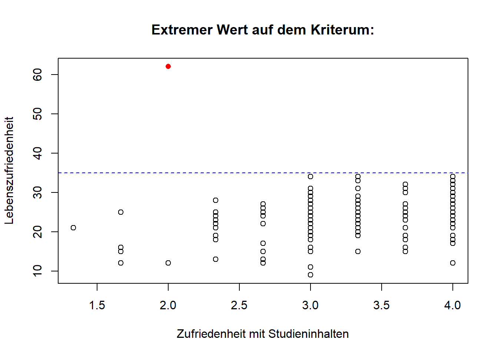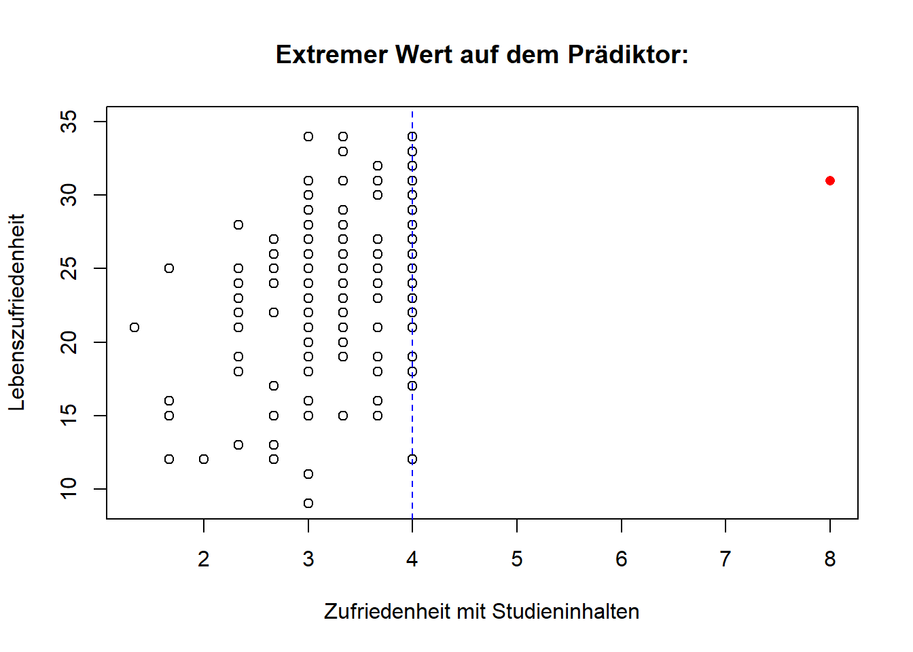
Wenn die Regressionsgerade stark durch einzelne Beobachtungen beeinflusst wird, bezeichnet man diese als einflussreiche Datenpunkte (influentials). Der Ausschluss dieser Beobachtungen würde stark abweichende Parameterschätzungen hervorbringen. Das gleichzeitige Vorhandensein von Ausreißern und Beobachtungen mit hoher Leverage könnten die Ursache dafür sein.
10.5.3.1 Überprüfung
Stoßen wir über auffällige Werte in unserem Datensatz, sollte wir zunächst kontrollieren, ob diese durch Eingabefehler oder fehlerhafte Kodierungen fehlender Werte (Missings) zustande gekommen sind.
Beispielsweise werden in manchen Anwendungen Missings nicht mit NA, sondern z.B. wie bei Unipark mit 99 oder -99 kodiert. Wir müssen diese vor der Auswertung auf NA umkodieren, da R diese sonst nicht als Missings erkennt. Für mehr Informationen dazu können wir im Kapitel zu Fehlenden Werten nachschauen.
Stark abweichende Werte lassen sich oft einfach mit Hilfe von Plots oder Deskriptivstatistiken identifizieren.
10.5.3.1.1 Extreme Werte auf dem Kriterium
Hierbei schaut man sich vor allem die Residuen an.
10.5.3.1.1.1 Plot der studentisierten gelöschten Residuen
Zur Exploration von Ausreißern auf dem Kriterium können wir uns die studentisierten gelöschten Residuen, geplottet gegen den Index \(i\), anschauen.
Studentisierte gelöschte Residuen werden wie folgt berechnet: \(\frac {e_i} {\hat {\sigma} \cdot \sqrt{1 - h_m}}\)
Sie sind theoretisch \(t\)-verteilt mit \(df = N − k − 1\) (N = Stichprobengröße, k = Anzahl Prädiktoren). Wir erhalten die Anzahl der Freiheitsgrade aus dem lm-Objekt mittels summary(lm_lz)$fstat[“dendf”].
Studentisiert heißt, dass die Residuen durch die geschätzte Populationsstandardabweichung der Residuen an der Stelle \(x_m\) (das meint den Hebelwert der Person \(h_m\)) geteilt werden.
Gelöscht bedeutet geschätzte Abweichung des vorhergesagten Wertes vom beobachteten Wert (das sind die normalen Residuen) in einem Modell ohne die entsprechende Person. Wir sagen also \(\hat y_i\) für Person \(i\) mit Hilfe eines Modells hervor, für welches Person \(i\) nicht in die Parameterschätzung mit eingegangen ist.
Für mehr Informationen zu studentisierten gelöschten Residuen (externally studentized residuals) siehe S.399ff im Lehrbuch von Cohen, Cohen, West & Aiken (2003).
Wir extrahieren diese mit rstudent() aus dem lm-Objekt.
plot(rstudent(lm_lz))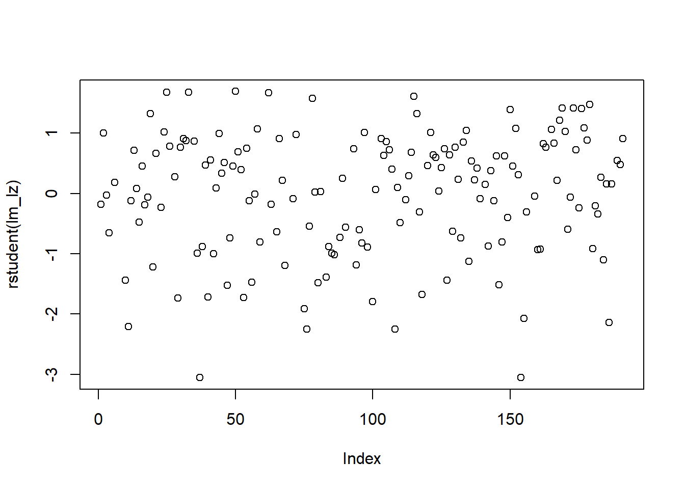
Es gibt keine einheitlichen Richtlinien darüber, ab wann ein studentisiertes gelöschtes Residuum als extrem groß anzusehen ist. Wir schauen nur, ob einzelne Werte stark vom Cluster der anderen Werte abweichen.
In unserem Beispiel gibt es keine Werte, die extrem von der Verteilung der anderen abweichen. Wir schauen uns dennoch exemplarisch einmal die zwei größten Werte an (d.h. die kleiner gleich - 3 sind).
In folgender Abbildung schauen wir uns an, wie eine extreme Abweichung eines studentisierten gelöschten Residuums aussehen könnte. In folgendem Plot wurde nur ein studentisiertes gelöschtes Residuum eingefügt; die anderen Werte sind gleich geblieben.
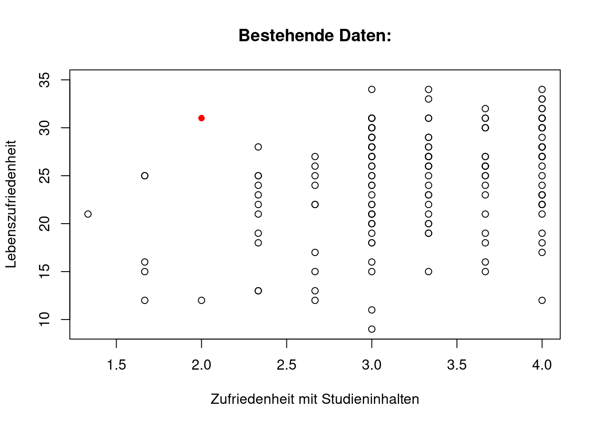
which(unname(rstudent(lm_lz) <= -3)) # Indizes aller Werte, die kleiner gleich -3 sind## [1] 37 154Mit which() lassen wir uns die Indizes derjenigen studentisierten gelöschten Residuen ausgeben, die \(\leq-3\) sind.
Wir nutzen außerdem unname(), weil rstudent() einen benannten numerischen Vektor (named num) erstellt und bei Nutzung von which() die Indizes sonst doppelt ausgegeben werden würden. Bei named nums werden die Indizes nämlich schon im Vektor mitgespeichert (ohne dass dieser dadurch seine Dimensionalität ändert).
10.5.3.1.1.2 Outlier Test
Alternativ könnten wir auch einen Signifikanztest nur für das größte studentisierte gelöschte Residuum durchführen. Dabei wird dessen p-Wert mit einer Bonferroni-Korrektur angepasst. Dazu wird der p-Wert mit der Stichprobengröße (hier: \(N=164\)) multipliziert. Das an der Stichprobengröße relativierte (d.h. durch dieses geteilt) Signifikanzlevel \(\alpha\) markiert den kritischen Wert (d.h. das korrigierte Signifkanzlevel).
Dazu nutzen wir outlierTest() aus dem Paket car. Wir nutzen konventionell \(\alpha=0.05\).
library(car)
outlierTest(lm_lz)## No Studentized residuals with Bonferroni p < 0.05
## Largest |rstudent|:
## rstudent unadjusted p-value Bonferroni p
## 37 -3.053226 0.0026521 0.43494Der Test liefert Evidenz dafür, dass das größte studentisierte gelöschte Residuum nicht extrem von den anderen abweicht.
10.5.3.1.2 Extreme Werte auf den Prädiktoren
Hierbei schauen wir uns vor allem die Hebelwerte \(h_{ii}\) einzelner Beobachtungen (engl. leverage oder hatvalues) an.
Hebelwerte geben die absolute Abweichung eines beobachteten Wertes einer Person vom Mittel aller Prädiktoren \(X\) (dem sog. Schwerpunkt) an.
Fälle mit großer Hebelwirkung haben potenziell einen größeren Einfluss auf die Parameterschätzungen (\(0 < h_{ii} < 1\)).
10.5.3.1.2.1 Plot und Histogramm der Hebelwerte
In kleinen bis mittelgroßen Datensätzen ist ein Indexplot der Hebelwerte eine ausreichende Methode, um Ausreißer auf den Prädiktoren zu erkennen.
Dazu extrahieren wir die Hebelwerte mit Hilfe der Funktion hatvalues() aus dem lm-Objekt. Damit fehlende Werte (NA) ausgeschlossen werden (ihre Hebelwirkung würde \(0\) betragen), wenden wir außerdem [!is.na()] an. is.na() evaluiert, ob die Elemente vorhanden sind (TRUE oder FALSE), ! sorgt dafür, dass keine Missings angewählt werden, und [ ] gibt die Indizes aus.
plot(hatvalues(lm_lz)[!is.na(daten$resid)])
In größeren Datensätzen sollten wir die Hebelwerte der Übersichtlichkeit halber in einem Histogramm visualisieren.
hist(hatvalues(lm_lz)[!is.na(daten$resid)])
Wir sollten uns hierbei auf die Inspektion weniger, extremer Werte beschränken und vor allem nur auf solche, die weit entfernt von den restlichen (nah beieinander liegenden Werten) sind.
Den größten Hebelwert und seinen Index können wir uns folgendermaßen ausgeben lassen:
sort((hatvalues(lm_lz)), decreasing=TRUE)[1]## 151
## 0.06632099Wenn wir z.B. die größten drei Werte betrachten möchte, schreiben wir [1:3] anstatt [1]. Wenn wir alle Werte absteigend (weil decreasing=TRUE) betrachten möchten, lassen wir die eckigen Klammern mit den Indizes komplett weg.
Der Hebelwert von Person 151 liegt etwas abseits von der Verteilung der anderen. Noch extremere Werte sollten wir uns immer genauer anschauen. In unserem Beispiel liegen aber keine offensichtlich extremen Hebelwerte vor.
10.5.3.1.3 Einflussreiche Datenpunkte
10.5.3.1.3.1 Residuen-Leverage Plot
Wenn es große Residuen und Hebelwerte gibt, können wir uns weiterführend den Residuen-Leverage Plot anschauen. Dieser plottet die Hebelwerte (\(x\)-Achse) gegen die standardisierten Residuen (\(y\)-Achse).
Zur Standardisierung werden die Residuen durch den Standardschätzfehler geteilt \(\frac {e_i} {\hat {\sigma}}\)
plot(lm_lz, which=5)
# fünfter Plot der plot()-Funktion für ein lm-Objekt ist der Residuen-Leverage PlotDie Lowess Line sollte auch hier wieder flach und nah an der gestrichelten Linie bei \(y=0\) sein.
Die Werte der Person mit dem Index 50 weisen eine leicht erhöhte hohe Cooks Distance auf. Allerdings sind die Grenzen bei 0.5 und 1 nicht einmal sichtbar, weil alle Werte der Cooks Distance relativ klein sind. Auch die Lowess Line ist flach an nah bei y=0. Beides spricht dafür, dass in unserem Datensatz keine einflussreichen Datenpunkte, die die Parameter verzerren könnten, enthalten sind.
In diesem Forumseintrag wird der Residuen-Leverage-Plot noch ausführlicher erklärt.
Was ist die Cooks Distance? Und wie hängt diese mit den standardisierten Residuen, der Leverage und der Lowess Fit Line zusammen?
Die Cooks Distance ist ein Maß dafür, wie sich die Regressionsgerade und damit die vorhergesagten Werte ändern würden, wenn wir die Daten einer betrachteten Person \(i\) (\(Cooks D_i\)) ausschliessen würden, wobei \(Cooks D_i \geq 0\) ist.
Je größer die \(Cooks D_i\), desto größer der Einfluss der Beobachtungen von Person \(i\).
Im Residuen-Leverage-Plot werden auch Linien der Cooks Distance mit den Werten \(0.5\) und \(1.0\) abgetragen, wenn Beobachtungen in die Nähe dieser Grenzen kommen (was im oberen Beispiel nicht der Fall ist).
Wir können uns folgendermaßen auch nur die Werte der Cooks Distance gegen den Index geplottet anschauen:
plot(lm_lz, which=4)
Schauen wir uns den Residuen-Leverage-Plot noch einmal an.
In den folgenden Abbildungen wurden die Werte von Person 50 auf dem Kriterium und einem Prädiktor (Zufriedenheit mit Studieninhalten) jeweils einzeln und anschließend gemeinsam manipuliert, um den jeweiligen Einfluss im Vergleich zum bestehenden Datensatz (der schon weiter oben dargestellt war) zu veranschaulichen.
In der Einführung zu Extremen Werte und einflussreichen Datenpunkte haben wir den Unterschied zwischen Ausreißern auf dem Kriterium und den Prädiktoren schon angesprochen. Die Abbildungen sollen deren Implikationen noch verdeutlichen. Bei der Interpretation helfen die durchgezogene Lowess Fit Line und die rot gestrichelten Grenzwerte der Cooks Distance.


Die Lowess Line ist immer noch flach und nah an der gestrichelten Linie bei \(y=0\).
Die Cooks Distance ist wesentlich größer, sie beträgt fast \(1\).

Die Lowess Line weicht wesentlich stärker von der gestrichelten Linie bei \(y=0\) ab.
Die Cooks Distance ist etwas größer, aber noch \(< 0.5\).

Die Lowess Line weicht extrem von der gestrichelten Linie bei \(y=0\) ab.
Die Cooks Distance ist \(> 1\).
10.5.3.2 Umgang
Achtung: Wir sollten abweichende Beobachtungen nicht unbedacht aus der Analyse entfernen. Sie können nicht nur durch fehlerhafte Messung, sondern auch korrekte, aber seltene Messungen zutande gekommen sein (z.B. weil wenig Leute eine gewisse Ausprägung auf einer bestimmten Variable besitzen).
Außerdem gibt es keine einheitlichen Richtlinien darüber, ab wann wir Ausreißer und einflussreiche Datenpunkte entfernen sollten. Wir sollte diese immer mit Hinblick auf die Gesamtverteilung bewerten. Jeder Ausschluss sollte plausibel begründet werden können.
Am besten ist es immer, zu überprüfen, ob wir robuste Ergebnisse vorliegen haben. Wir führen die vorgestellten Analysen mit und ohne kritische Werte durch und schauen uns an, was passiert. Ändern sich die Befunde nicht, sind wir wahrscheinlich auf der sicheren Seite.
10.6 Literatur & weiterführende Hilfe
Dieses Kapitel basiert größtenteils auf dem in der Vorlesung Multivariate Verfahren des Masterstudiengangs Psychologie genutzen Lehrbuch:
Cohen, J., Cohen, P., West, S. G., & Aiken, L. S. (2003). Applied Multiple Regression/Correlation Analysis for the Behavioral Sciences Hillsdale, NJ: Erlbaum.
Abschnitt 4.3 Assumptions and Ordinary Least Squares Regresion (S.117-125)
Abschnitt 4.4 Detecting Violations of Assumptions (S.125-141)
Abschnitt 4.5 Remedies: Alternative Approaches When Problems Are Detected (S.141-149)
Abschnitt 10.3 Detecting Outliers: Regression Diagnostics” (S.394-411)
Abschnitt 10.5 Multicollinearity” (S.419-425)
(für HU-Studierende über ub.hu-berlin.de zugänglich)
Für ein deutschsprachiges Buch:
Gollwitzer, M., Eid, M., & Schmitt, M. (2017). Statistik und Forschungsmethoden. Weinheim: Beltz Verlagsgruppe. (für HU-Studierende online zugänglich)
Kapitel “Regressionsdiagnostik” (S. 704-725)
(für HU-Studierende über ub.hu-berlin.de zugänglich)
Zur weiteren Hilfe bei der Interpretation von Plots, können wir diesen Forumseintrag sowie diese Seite nutzen.
Um eine möglichst exakte Replikation der Funktionen zu gewährleisten gibt es im folgenden relevante Angaben zum System (R-Version, Betriebssystem, geladene Pakete mit Angaben zur Version), mit welchem diese Seite erstellt wurde.
sessionInfo()## R version 4.2.2 (2022-10-31 ucrt)
## Platform: x86_64-w64-mingw32/x64 (64-bit)
## Running under: Windows 10 x64 (build 22621)
##
## Matrix products: default
##
## locale:
## [1] LC_COLLATE=English_Germany.utf8 LC_CTYPE=English_Germany.utf8
## [3] LC_MONETARY=English_Germany.utf8 LC_NUMERIC=C
## [5] LC_TIME=English_Germany.utf8
##
## attached base packages:
## [1] grid stats graphics grDevices utils datasets methods
## [8] base
##
## other attached packages:
## [1] ICC_2.4.0 tidyr_1.2.1 naniar_0.6.1 VIM_6.2.2
## [5] colorspace_2.0-3 car_3.1-1 carData_3.0-5 rmarkdown_2.18
## [9] readr_2.1.3 Hmisc_4.7-2 ggplot2_3.4.0 Formula_1.2-4
## [13] survival_3.4-0 lattice_0.20-45 readxl_1.4.1 foreign_0.8-84
## [17] knitr_1.41 devtools_2.4.5 usethis_2.1.6 kableExtra_1.3.4
## [21] dplyr_1.0.10 psych_2.2.9
##
## loaded via a namespace (and not attached):
## [1] deldir_1.0-6 ellipsis_0.3.2 class_7.3-20
## [4] visdat_0.5.3 htmlTable_2.4.1 base64enc_0.1-3
## [7] fs_1.5.2 rstudioapi_0.14 proxy_0.4-27
## [10] remotes_2.4.2 fansi_1.0.3 ranger_0.14.1
## [13] xml2_1.3.3 splines_4.2.2 mnormt_2.1.1
## [16] cachem_1.0.6 robustbase_0.95-0 pkgload_1.3.2
## [19] jsonlite_1.8.4 cluster_2.1.4 png_0.1-8
## [22] shiny_1.7.3 compiler_4.2.2 httr_1.4.4
## [25] backports_1.4.1 assertthat_0.2.1 Matrix_1.5-1
## [28] fastmap_1.1.0 cli_3.4.1 later_1.3.0
## [31] htmltools_0.5.4 prettyunits_1.1.1 tools_4.2.2
## [34] gtable_0.3.1 glue_1.6.2 Rcpp_1.0.9
## [37] cellranger_1.1.0 jquerylib_0.1.4 vctrs_0.5.1
## [40] svglite_2.1.0 nlme_3.1-160 lmtest_0.9-40
## [43] laeken_0.5.2 xfun_0.35 stringr_1.5.0
## [46] ps_1.7.2 rvest_1.0.3 mime_0.12
## [49] miniUI_0.1.1.1 lifecycle_1.0.3 DEoptimR_1.0-11
## [52] zoo_1.8-11 MASS_7.3-58.1 scales_1.2.1
## [55] hms_1.1.2 promises_1.2.0.1 parallel_4.2.2
## [58] RColorBrewer_1.1-3 yaml_2.3.6 memoise_2.0.1
## [61] gridExtra_2.3 sass_0.4.4 rpart_4.1.19
## [64] latticeExtra_0.6-30 stringi_1.7.8 highr_0.9
## [67] e1071_1.7-12 checkmate_2.1.0 boot_1.3-28
## [70] pkgbuild_1.4.0 rlang_1.0.6 pkgconfig_2.0.3
## [73] systemfonts_1.0.4 evaluate_0.18 purrr_0.3.5
## [76] htmlwidgets_1.5.4 processx_3.8.0 tidyselect_1.2.0
## [79] norm_1.0-10.0 magrittr_2.0.3 bookdown_0.30
## [82] R6_2.5.1 generics_0.1.3 profvis_0.3.7
## [85] DBI_1.1.3 pillar_1.8.1 withr_2.5.0
## [88] abind_1.4-5 sp_1.5-1 nnet_7.3-18
## [91] tibble_3.1.8 crayon_1.5.2 interp_1.1-3
## [94] utf8_1.2.2 tzdb_0.3.0 urlchecker_1.0.1
## [97] jpeg_0.1-10 data.table_1.14.6 callr_3.7.3
## [100] vcd_1.4-10 digest_0.6.30 webshot_0.5.4
## [103] xtable_1.8-4 httpuv_1.6.6 munsell_0.5.0
## [106] viridisLite_0.4.1 bslib_0.4.1 sessioninfo_1.2.2Für Informationen zur Interpretation dieses Outputs schaut auch den Abschnitt Replizierbarkeit von Analysen des Kapitels zu Paketen an.